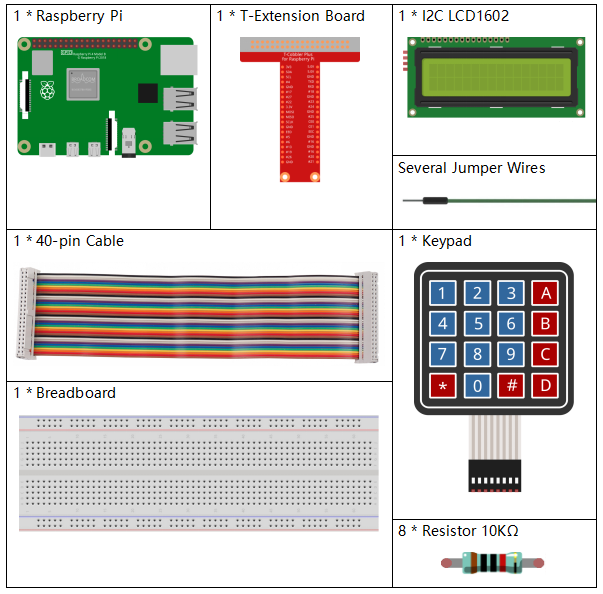

Bemerkung
Hallo und willkommen in der SunFounder Raspberry Pi & Arduino & ESP32 Enthusiasten-Gemeinschaft auf Facebook! Tauchen Sie tiefer ein in die Welt von Raspberry Pi, Arduino und ESP32 mit anderen Enthusiasten.
Warum beitreten?
Expertenunterstützung: Lösen Sie Nachverkaufsprobleme und technische Herausforderungen mit Hilfe unserer Gemeinschaft und unseres Teams.
Lernen & Teilen: Tauschen Sie Tipps und Anleitungen aus, um Ihre Fähigkeiten zu verbessern.
Exklusive Vorschauen: Erhalten Sie frühzeitigen Zugang zu neuen Produktankündigungen und exklusiven Einblicken.
Spezialrabatte: Genießen Sie exklusive Rabatte auf unsere neuesten Produkte.
Festliche Aktionen und Gewinnspiele: Nehmen Sie an Gewinnspielen und Feiertagsaktionen teil.
👉 Sind Sie bereit, mit uns zu erkunden und zu erschaffen? Klicken Sie auf [hier] und treten Sie heute bei!
3.1.9 Passwortsperre
Einführung
In diesem Projekt verwenden wir eine Tastatur und ein LCD, um ein Kombinationsschloss zu erstellen. Das LCD zeigt eine entsprechende Aufforderung an, um Ihr Passwort auf der Tastatur einzugeben. Wenn das Passwort korrekt eingegeben wird, wird „Richtig“ angezeigt.
Auf der Grundlage dieses Projekts können wir zusätzliche elektronische Komponenten wie einen Summer, eine LED usw. hinzufügen, um verschiedene experimentelle Phänomene für die Passworteingabe zu realisieren.
Benötigte Komponenten
Für dieses Projekt benötigen wir die folgenden Komponenten.
{kind=link}
Schaltplan
T-Karte Name |
physisch |
wiringPi |
BCM |
GPIO18 |
Pin 12 |
1 |
18 |
GPIO23 |
Pin 16 |
4 |
23 |
GPIO24 |
Pin 18 |
5 |
24 |
GPIO25 |
Pin 22 |
6 |
25 |
GPIO17 |
Pin 11 |
0 |
17 |
GPIO27 |
Pin 13 |
2 |
27 |
GPIO22 |
Pin 15 |
3 |
22 |
SPIMOSI |
Pin 19 |
12 |
10 |
SDA1 |
Pin 3 |
||
SCL1 |
Pin 5 |
Experimentelle Vorgehensweise
Schritt 1: Schaltung aufbauen.

Schritt 2: Verzeichnis ändern.
cd ~/davinci-kit-for-raspberry-pi/python-pi5
Schritt 3: Ausführen.
sudo python3 3.1.9_PasswordLock_zero.py
Nachdem der Code ausgeführt wurde, wird die Tastatur verwendet, um das Passwort einzugeben: 1984. Wenn auf dem LCD1602 „Richtig“ angezeigt wird, ist das Passwort korrekt eingegeben. Andernfalls wird „FALSCHE TASTE“ angezeigt.
Bemerkung
Wenn der Fehler
Datei nicht gefunden: [Errno 2] Keine solche Datei oder Verzeichnis: '/dev/i2c-1'auftritt, müssen Sie sich auf I2C configuration beziehen, um I2C zu aktivieren.Wenn der Fehler
Modul nicht gefunden: Kein Modul mit dem Namen 'smbus2'auftritt, führen Sie bittesudo pip3 install smbus2aus.Wenn der Fehler
OSError: [Errno 121] Remote I/O-Fehlerauftritt, bedeutet dies, dass das Modul falsch angeschlossen ist oder das Modul defekt ist.Wenn der Code und die Verkabelung korrekt sind, das LCD jedoch immer noch keinen Inhalt anzeigt, können Sie den Potentiometer auf der Rückseite drehen, um den Kontrast zu erhöhen.
Warnung
Wenn die Fehlermeldung RuntimeError: Cannot determine SOC peripheral base address angezeigt wird, lesen Sie bitte Wenn gpiozero nicht funktioniert.
Code
Bemerkung
Sie können den unten stehenden Code Ändern/Zurücksetzen/Kopieren/Ausführen/Stoppen. Bevor Sie dies tun, müssen Sie zum Quellcodepfad wie raphael-kit/python-pi5 gehen. Nachdem Sie den Code geändert haben, können Sie ihn direkt ausführen, um die Auswirkungen zu sehen.
#!/usr/bin/env python3
from gpiozero import DigitalOutputDevice, Button
from time import sleep
import LCD1602
class Tastatur:
def __init__(self, reihen_pins, spalten_pins, tasten):
"""
Initialisieren der Tastatur mit festgelegten Reihen- und Spaltenpins und Tasten.
:param reihen_pins: Liste der GPIO-Pins für die Reihen.
:param spalten_pins: Liste der GPIO-Pins für die Spalten.
:param tasten: Liste der Tasten in der Tastaturanordnung.
"""
self.reihen = [DigitalOutputDevice(pin) for pin in reihen_pins] # Einrichtung der Reihenpins
self.spalten = [Button(pin, pull_up=False) for pin in spalten_pins] # Einrichtung der Spaltenpins
self.tasten = tasten # Tastaturanordnung
def lesen(self):
"""
Lesen und Zurückgeben einer Liste der aktuell gedrückten Tasten.
:return: Liste der gedrückten Tasten.
"""
gedrueckte_tasten = []
for i, reihe in enumerate(self.reihen):
reihe.on() # Aktiviere aktuelle Reihe
for j, spalte in enumerate(self.spalten):
if spalte.is_pressed:
index = i * len(self.spalten) + j
gedrueckte_tasten.append(self.tasten[index])
reihe.off() # Deaktiviere Reihe nach Überprüfung
return gedrueckte_tasten
# Einrichtung der Passwortüberprüfung
LAENGE = 4
passwort = ['1', '9', '8', '4'] # Voreingestelltes Passwort
testwort = ['0', '0', '0', '0'] # Speicherung der Benutzereingabe
tasteIndex = 0 # Index für Eingabetasten
def ueberpruefen():
"""
Überprüfen, ob das eingegebene Passwort mit dem voreingestellten Passwort übereinstimmt.
:return: 1 bei Übereinstimmung, 0 sonst.
"""
for i in range(LAENGE):
if passwort[i] != testwort[i]:
return 0
return 1
def einrichten():
"""
Einrichten der Tastatur und des LCD-Displays.
"""
global tastatur, letzte_gedrueckte_taste
# Pin-Konfiguration für die Tastatur
reihen_pins = [18, 23, 24, 25]
spalten_pins = [10, 22, 27, 17]
tasten = ["1", "2", "3", "A",
"4", "5", "6", "B",
"7", "8", "9", "C",
"*", "0", "#", "D"]
# Tastatur und LCD initialisieren
tastatur = Tastatur(reihen_pins, spalten_pins, tasten)
letzte_gedrueckte_taste = []
LCD1602.init(0x27, 1) # LCD initialisieren
LCD1602.clear()
LCD1602.write(0, 0, 'WILLKOMMEN!')
LCD1602.write(2, 1, 'Geben Sie das Passwort ein')
sleep(2)
def schleife():
"""
Hauptschleife zur Handhabung der Tastatureingabe und Passwortüberprüfung.
"""
global tasteIndex, LAENGE, tastatur, letzte_gedrueckte_taste
while True:
gedrueckte_tasten = tastatur.lesen()
if gedrueckte_tasten and gedrueckte_tasten != letzte_gedrueckte_taste:
if tasteIndex < LAENGE:
LCD1602.clear()
LCD1602.write(0, 0, "Geben Sie das Passwort ein:")
LCD1602.write(15 - tasteIndex, 1, gedrueckte_tasten[0])
testwort[tasteIndex] = gedrueckte_tasten[0]
tasteIndex += 1
if tasteIndex == LAENGE:
if ueberpruefen() == 0:
LCD1602.clear()
LCD1602.write(3, 0, "FALSCHE TASTE!")
LCD1602.write(0, 1, "Bitte erneut versuchen")
else:
LCD1602.clear()
LCD1602.write(4, 0, "RICHTIG!")
LCD1602.write(2, 1, "Willkommen zurück")
tasteIndex = 0 # Tastenindex nach Überprüfung zurücksetzen
letzte_gedrueckte_taste = gedrueckte_tasten
sleep(0.1)
try:
einrichten()
schleife()
except KeyboardInterrupt:
LCD1602.clear() # LCD-Anzeige bei Unterbrechung löschen
Code-Erklärung
Das Skript importiert Klassen zur Verwaltung digitaler Ausgabegeräte und Tasten aus der Bibliothek gpiozero. Es importiert auch die sleep-Funktion aus dem time-Modul, um Verzögerungen in der Ausführung des Skripts zu ermöglichen. Darüber hinaus wird die Bibliothek LCD1602 importiert, um das LCD1602-Display zu steuern.
#!/usr/bin/env python3 from gpiozero import DigitalOutputDevice, Button from time import sleep import LCD1602
Definiert eine benutzerdefinierte Klasse zur Verwaltung der Tastatur. Sie initialisiert die Tastatur mit den angegebenen Reihen- und Spaltenpins und bietet eine Methode
lesen, um gedrückte Tasten zu erkennen.class Tastatur: def __init__(self, reihen_pins, spalten_pins, tasten): """ Initialisieren der Tastatur mit festgelegten Reihen- und Spaltenpins und Tasten. :param reihen_pins: Liste der GPIO-Pins für die Reihen. :param spalten_pins: Liste der GPIO-Pins für die Spalten. :param tasten: Liste der Tasten in der Tastaturanordnung. """ self.reihen = [DigitalOutputDevice(pin) for pin in reihen_pins] # Einrichtung der Reihenpins self.spalten = [Button(pin, pull_up=False) for pin in spalten_pins] # Einrichtung der Spaltenpins self.tasten = tasten # Tastaturanordnung def lesen(self): """ Lesen und Zurückgeben einer Liste der aktuell gedrückten Tasten. :return: Liste der gedrückten Tasten. """ gedrueckte_tasten = [] for i, reihe in enumerate(self.reihen): reihe.on() # Aktiviere aktuelle Reihe for j, spalte in enumerate(self.spalten): if spalte.is_pressed: index = i * len(self.spalten) + j gedrueckte_tasten.append(self.tasten[index]) reihe.off() # Deaktiviere Reihe nach Überprüfung return gedrueckte_tasten
Richten Sie das Passwortüberprüfungssystem ein.
LAENGEdefiniert die Länge des Passworts.passwortist das voreingestellte richtige Passwort, währendtestwortverwendet wird, um die Eingabe des Benutzers zu speichern.tasteIndexverfolgt die aktuelle Position in der Benutzereingabe.# Einrichtung der Passwortüberprüfung LAENGE = 4 passwort = ['1', '9', '8', '4'] # Voreingestelltes Passwort testwort = ['0', '0', '0', '0'] # Speicherung der Benutzereingabe tasteIndex = 0 # Index für Eingabetasten
Funktion zum Vergleichen des eingegebenen Passworts (
testwort) mit dem voreingestellten Passwort (passwort) und zur Rückgabe des Ergebnisses.def ueberpruefen(): """ Überprüfen, ob das eingegebene Passwort mit dem voreingestellten Passwort übereinstimmt. :return: 1 bei Übereinstimmung, 0 sonst. """ for i in range(LAENGE): if passwort[i] != testwort[i]: return 0 return 1
Initialisiert die Tastatur und das LCD-Display. Zeigt eine Begrüßungsnachricht und Anweisungen zum Eingeben des Passworts an.
def einrichten(): """ Einrichten der Tastatur und des LCD-Displays. """ global tastatur, letzte_gedrueckte_taste # Pin-Konfiguration für die Tastatur reihen_pins = [18, 23, 24, 25] spalten_pins = [10, 22, 27, 17] tasten = ["1", "2", "3", "A", "4", "5", "6", "B", "7", "8", "9", "C", "*", "0", "#", "D"] # Tastatur und LCD initialisieren tastatur = Tastatur(reihen_pins, spalten_pins, tasten) letzte_gedrueckte_taste = [] LCD1602.init(0x27, 1) # LCD initialisieren LCD1602.clear() LCD1602.write(0, 0, 'WILLKOMMEN!') LCD1602.write(2, 1, 'Geben Sie das Passwort ein') sleep(2)
Die Hauptschleife zur Handhabung der Tastatureingabe und der Passwortüberprüfung. Sie aktualisiert das LCD-Display basierend auf dem eingegebenen Passwort und gibt Rückmeldung, ob das Passwort korrekt oder inkorrekt ist.
def schleife(): """ Hauptschleife zur Handhabung der Tastatureingabe und Passwortüberprüfung. """ global tasteIndex, LAENGE, tastatur, letzte_gedrueckte_taste while True: gedrueckte_tasten = tastatur.lesen() if gedrueckte_tasten and gedrueckte_tasten != letzte_gedrueckte_taste: if tasteIndex < LAENGE: LCD1602.clear() LCD1602.write(0, 0, "Geben Sie das Passwort ein:") LCD1602.write(15 - tasteIndex, 1, gedrueckte_tasten[0]) testwort[tasteIndex] = gedrueckte_tasten[0] tasteIndex += 1 if tasteIndex == LAENGE: if ueberpruefen() == 0: LCD1602.clear() LCD1602.write(3, 0, "FALSCHE TASTE!") LCD1602.write(0, 1, "Bitte erneut versuchen") else: LCD1602.clear() LCD1602.write(4, 0, "RICHTIG!") LCD1602.write(2, 1, "Willkommen zurück") tasteIndex = 0 # Tastenindex nach Überprüfung zurücksetzen letzte_gedrueckte_taste = gedrueckte_tasten sleep(0.1)
Führt die Einrichtung aus und tritt in die Hauptschleife ein. Ermöglicht ein sauberes Beenden des Programms mit einer Tastaturunterbrechung (Strg+C) und löscht das LCD-Display.
try: einrichten() schleife() except KeyboardInterrupt: LCD1602.clear() # LCD-Anzeige bei Unterbrechung löschen